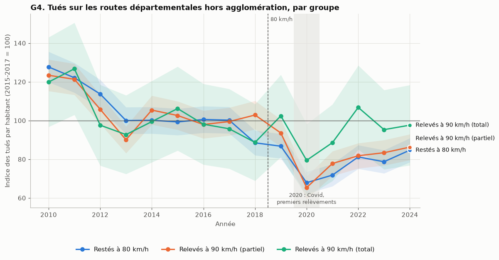
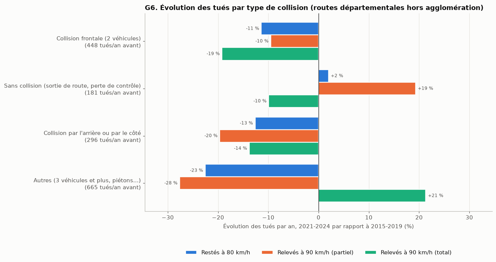

Projet Python pour la data science — ENSAE 2A, 2026-2027
Auteur·rice·s
Héloïse Gonon
Samir Tamlakoutan
Brice Valette
Résumé. Nous étudions l’effet sur la mortalité routière de la limitation à 80 km/h de juillet 2018, puis du retour aux 90 km/h décidé par 50 départements entre 2020 et 2023. Nous utilisons les fichiers d’accidents corporels (BAAC, 2010-2024), nettoyés et validés par les chiffres officiels de l’ONISR, ainsi qu’une table des relèvements que nous avons construite. Nous comparons l’évolution des tués sur les routes départementales des départements relevés à celle des départements restés à 80 km/h, sur les mêmes mois (différence de différences, étude d’événement, tests de robustesse). La mortalité a évolué un peu moins favorablement dans les départements relevés, et nettement moins dans les 8 qui ont relevé tout leur réseau ; mais ces départements, presque tous de montagne, voient aussi leur mortalité augmenter sur les routes dont la limitation n’a pas changé, si bien que nous ne pouvons pas attribuer clairement cet écart au relèvement. Pour le passage à 80 km/h, nos données vont dans le sens d’un effet modéré, sans permettre de le séparer des autres facteurs.
Comment exécuter ce notebook
Avec Python 3.11 ou plus, installer les dépendances dans un environnement virtuel : pip install -r requirements.txt (commandes complètes dans le README.md).
Choisir le noyau de cet environnement (.venv), puis lancer toutes les cellules dans l’ordre (« Run All »).
Au premier lancement, les données sont téléchargées depuis leurs sources publiques (data.gouv.fr, INSEE, SDES, cartiflette) puis nettoyées : compter environ 4 minutes (3 min 40 s mesurées sur un MacBook Air, dont le téléchargement d’environ 330 Mo de fichiers BAAC). Les fichiers produits sont gardés dans data/ (non versionné) et relus aux lancements suivants. Le code est dans scripts/ ; ce notebook ne fait qu’appeler les fonctions et commenter les résultats.
Voir le code
import sysimport warningsfrom pathlib import Pathimport pandas as pdfrom IPython.display import displaysys.path.insert(0, str(Path("scripts").resolve()))import data_analysis as daimport graphiques as grimport indicateurs as indfrom collecte import charger_contours, charger_departements_90, charger_population, charger_radarswarnings.filterwarnings("ignore", category=FutureWarning)pd.set_option("display.max_columns", 30)gr.appliquer_style()# Variable principale pour Q2 : tués sur les routes départementales hors agglomérationVARIABLE_Q2 ="tues_rd"
1. Introduction
1.1 Contexte
Le 1er juillet 2018, la vitesse maximale autorisée est passée de 90 à 80 km/h sur les routes à double sens sans séparateur central, hors agglomération. Annoncée en janvier 2018, la mesure a été très contestée. La loi d’orientation des mobilités (LOM) de décembre 2019 a ensuite permis aux départements de relever la limite à 90 km/h sur tout ou partie de leurs routes, après une étude d’accidentalité et l’avis de la commission départementale de sécurité routière. Les premiers relèvements datent de février 2020 (Corrèze et Cantal) ; d’après la table que nous avons construite, 50 départements métropolitains l’avaient fait à la fin 2024, à des dates et sur des linéaires très différents.
C’est une expérience naturelle : à partir de 2020, des départements appliquent deux limites différentes, ce qui permet de comparer l’évolution de la mortalité des départements relevés à celle des départements restés à 80 km/h.
Le mécanisme attendu vient du « modèle de puissance » de Nilsson, repris par l’ONISR et le Cerema : le nombre de tués augmente bien plus que proportionnellement avec la vitesse moyenne. Quelques km/h de moins peuvent donc faire baisser sensiblement la mortalité, surtout pour les chocs frontaux et les sorties de route, accidents typiques du réseau secondaire. L’ONISR a publié en février 2024 une évaluation du relèvement sur 2019-2022 ; nous comparons ses résultats aux nôtres en section 5.1.
1.2 Question et hypothèses
La baisse de la vitesse autorisée à 80 km/h a-t-elle réduit la mortalité routière, et le retour aux 90 km/h l’a-t-il fait remonter ?
Hypothèse
Ce qu’on devrait observer si elle est vraie
H1 : le 80 km/h a réduit la mortalité
Rupture à la baisse en 2018-2019 sur le réseau concerné, absente ou plus faible ailleurs
H2 : le retour aux 90 km/h a augmenté la mortalité
Après relèvement, évolution moins favorable dans les départements relevés que dans ceux restés à 80
H3 : l’effet dépend de l’intensité
Écart plus grand pour les relèvements totaux que partiels
H4 : l’effet passe par certains types d’accidents
Variation concentrée sur les chocs frontaux et les sorties de route
⚠️ Nous mesurons l’effet d’un changement de règle, pas d’un changement de vitesse observée : les vitesses pratiquées ne sont pas disponibles.
Aucune table officielle ne recense proprement les relèvements : nous l’avons construite à partir de l’étude ONISR de février 2024 (base officielle), de la liste L’Argus 2026, de la liste de la Ligue de défense des conducteurs et de la presse locale. La méthode complète et les points encore incertains sont dans docs/collecte_departements.md.
Groupes utilisés.G90_total : au moins 80 % du réseau départemental relevé ; G90_partiel : relèvement partiel ; G80 : aucun relèvement avant fin 2024 (Morbihan et Eure, relevés en 2025-2026, sont donc dans G80).
Répartition. Sur les 96 départements métropolitains, 46 sont dans G80, 42 dans G90_partiel et 8 dans G90_total (Allier, Ardèche, Aveyron, Cantal, Corrèze, Creuse, Lozère, Puy-de-Dôme). G80 comprend Paris, qui n’a aucune route éligible, ainsi que le Morbihan et l’Eure, relevés après la période d’étude.
Calendrier. Les relèvements sont précoces : aucun avant 2020, puis 28 en 2020, 11 en 2021, 6 en 2022 et 5 en 2023, soit 90 % entre 2020 et 2022 (médiane : fin octobre 2020). Dix seulement ont eu lieu avant l’été 2020 et 3 pendant le confinement strict (mars à mai 2020) : les premiers relèvements coïncident donc avec la chute du trafic due au Covid, ce qui rend 2020 difficile à lire.
Intensité.G90_partiel est faiblement traité : la part médiane du réseau relevé est de 8 %, 28 départements sur 42 sont sous 10 % et 6 seulement dépassent 20 % (maximum : 35 %). Le seuil de 80 % est en revanche sans ambiguïté : aucun département relevé n’est entre 35 % et 91 %. G90_total ne compte que 8 départements, dont 6 de montagne (typologie Cerema z1) : l’écart avec G80 peut refléter la géographie autant que la vitesse.
Incertitudes restantes (détail dans docs/collecte_departements.md) :
Dates. 47 des 50 dates sont connues au jour, 2 au mois et 1 est approximative (Tarn-et-Garonne, février 2023). Une erreur d’un mois est négligeable devant des fenêtres de 24 mois, mais la plupart des dates ne reposent que sur l’ONISR : une seconde source reste à trouver.
Annulations en justice. Au moins cinq départements (Corrèze, Orne, Hautes-Alpes, Hérault, Sarthe) ont vu des arrêtés annulés par un tribunal administratif en 2022 et 2023 (et une nouvelle annulation en 2026 pour l’Hérault), mais restent comptés comme relevés. Nous ne savons pas s’ils sont revenus à 80 km/h ou ont pris de nouveaux arrêtés. La Corrèze, annulée avec effet au 1er janvier 2024, est le cas le plus sensible : c’est un département G90_total.
Linéaires. L’ONISR (2022) et L’Argus (2026) divergent pour plusieurs départements (Sarthe : 930 km contre 610 ; Vienne : 429 contre 200 ; Yonne : 450 contre 1 511). Ces trois départements sont dans G90_partiel, loin du seuil de 80 % : leur classement ne change pas, mais leur intensité de traitement est incertaine.
Effet probable sur les résultats. Compter comme relevé un département redescendu à 80 km/h revient à mélanger traités et non traités : cela devrait atténuer l’écart mesuré entre G90 et G80, pas le créer. Comme G90_partiel est très peu traité, un effet faible ou nul dans ce groupe serait peu informatif. Les conclusions les plus solides concernent donc G90_total, avec la réserve du petit effectif et de la géographie.
2.3 Nettoyage et harmonisation des BAAC
Traitements codés dans scripts/clean_data.py :
séparateur et encodage détectés pour chaque fichier (ils changent selon les années) ;
codes département des anciens fichiers ramenés au format officiel (590 → 59, 201 → 2A) ;
coordonnées d’avant 2019 converties (entiers divisés par 100 000) et valeurs aberrantes retirées ;
valeurs « non renseigné » (-1) converties en valeurs manquantes ;
usagers et véhicules agrégés au niveau de l’accident, puis fusion des quatre tables.
Réseau concerné par le 80 km/h : routes nationales ou départementales, hors agglomération, à double sens. Pour Q2, on se restreint aux routes départementales (catr == 3), les seules que les départements peuvent relever. Indicateur principal : les tués à 30 jours (les blessés hospitalisés ne sont plus fiables depuis 2018).
Usagers en fuite. Depuis 2021, les BAAC recensent aussi les usagers en fuite, impliqués dans un accident mais non identifiés. Nous ne les retirons pas : un usager en fuite a quitté les lieux et ne peut donc pas figurer parmi les tués. Notre indicateur principal, le nombre de tués, n’est pas concerné.
Contrôle du nettoyage. De 2017 à 2024, le nombre de tués que nous obtenons en métropole est identique, année par année, à celui publié par l’ONISR (par exemple 3 244 en 2019 et 3 193 en 2024). Ce contrôle nous a permis de détecter une erreur : dans le fichier BAAC de 2019, les départements 01 à 09 sont codés sans zéro (« 1 » au lieu de « 01 ») et étaient donc exclus de la métropole, soit 247 tués manquants. Nous avons corrigé le nettoyage.
Malgré le changement de format des BAAC en 2019, les séries d’accidents et de tués ne présentent pas de rupture : la seule cassure est la chute de 2020, liée à la baisse du trafic pendant la crise sanitaire. La part des accidents survenus sur le réseau concerné par le 80 km/h reste comprise entre 15,6 % et 18,9 % sur toute la période, sans saut en 2019 (18,0 % en 2018, 17,7 % en 2019).
Validité de notre définition du réseau concerné. Depuis 2019, les BAAC indiquent la vitesse maximale autorisée (VMA), ce qui permet de contrôler notre règle (route nationale ou départementale, hors agglomération, à double sens). Parmi les accidents qu’elle classe sur le réseau concerné, environ 81 % ont effectivement lieu sur une route limitée à 80 ou 90 km/h. Les autres se produisent probablement sur des sections limitées à 70 km/h ou sur des routes à 110 km/h. Notre définition est donc une approximation. Mais cette proportion est très stable de 2019 à 2024 (entre 80,5 % et 81,8 %) : l’erreur de classement ne varie pas dans le temps et ne devrait donc pas biaiser les comparaisons d’évolutions, qui sont l’objet de notre analyse. Ce contrôle est impossible avant 2019, faute de VMA dans les données.
Valeurs manquantes. La catégorie de route (catr) et la localisation en ou hors agglomération (agg), qui servent à définir le réseau concerné, sont presque toujours renseignées. Les coordonnées GPS (lat, long) manquent pour 63 à 68 % des accidents jusqu’en 2014, puis de moins en moins : elles étaient rarement saisies dans l’ancien format. Comme notre analyse se fait au niveau du département, ce manque est sans conséquence. La VMA n’existe qu’à partir de 2019 (100 % de valeurs manquantes avant, 2 à 4 % ensuite). Le type de collision (col) manque pour 3 % des accidents en 2020 seulement, une année exclue de l’analyse par type de collision (section 4.4).
Le point le plus important concerne le régime de circulation (circ), qui indique si une route est à double sens : presque toujours renseigné avant 2019, il manque pour 5 à 7 % des accidents à partir de 2019. C’est ce qui fait passer la part des accidents dont le réseau est inconnu de moins de 1 % à plus de 5 % (tableau ci-dessus). La cellule suivante mesure l’effet de cette rupture sur notre réseau.
Depuis 2019, la longitude manque encore pour environ 3 % des accidents : ce sont des accidents d’outre-mer, dont la longitude sort des bornes de notre filtre, sans effet sur une analyse limitée à la métropole.
Sur les routes nationales et départementales hors agglomération, la part d’accidents dont le régime de circulation est inconnu passe de moins de 1 % jusqu’en 2018 à 2,3 % en 2019, puis à environ 3,5 % en 2023-2024. Cette rupture vient très probablement du changement de format de 2019, qui code explicitement les valeurs non renseignées. Ces accidents ne sont classés dans aucun périmètre : les comptages du réseau concerné sont donc légèrement sous-estimés à partir de 2019, et pas avant.
Conséquence pour Q1 : une partie de la baisse observée après le passage à 80 km/h, de l’ordre de 2 à 3 %, pourrait venir de ce changement de codage et non de la réforme. Pour Q2, l’effet est beaucoup plus faible : départements relevés et départements restés à 80 km/h sont comparés sur les mêmes années, toutes postérieures à 2019, et la sous-estimation les touche de la même façon, sauf si la qualité de saisie diffère d’un département à l’autre.
Le panel compte 96 départements métropolitains et 180 mois (janvier 2010 à décembre 2024), soit 17 280 lignes, sans doublon. Chaque département est affecté à un groupe et dispose, pour chaque année, d’une population et de ventes de carburants.
Pour 2019 et 2022, nous retrouvons exactement les tués hors agglomération et hors autoroute publiés par l’ONISR dans son étude sur le relèvement à 90 km/h : 1 944 en 2019 et 1 934 en 2022, en sommant les départements. Notre périmètre géographique et notre comptage des tués reproduisent donc la source officielle. C’est ce contrôle qui a révélé l’erreur sur les codes départementaux de 2019 : avant correction, il manquait 154 tués en 2019, soit exactement la somme des départements 01 à 09.
bilan = da.bilan_national(panel)display(bilan[["tues_80", "tues_temoin", "indice_tues_80", "indice_tues_temoin", "indice_carburants_routiers_m3"]].round(1))
tues_80
tues_temoin
indice_tues_80
indice_tues_temoin
indice_carburants_routiers_m3
annee
2010
2202
1788
124.5
106.3
98.0
2011
2122
1835
120.0
109.1
96.7
2012
1938
1708
109.6
101.5
95.8
2013
1706
1557
96.5
92.6
94.9
2014
1786
1593
101.0
94.7
95.7
2015
1778
1680
100.5
99.9
96.7
2016
1775
1690
100.4
100.5
101.1
2017
1753
1677
99.1
99.7
102.2
2018
1674
1557
94.6
92.6
100.9
2019
1602
1559
90.6
92.7
101.9
2020
1195
1266
67.6
75.3
87.4
2021
1336
1490
75.5
88.6
99.0
2022
1486
1668
84.0
99.1
102.9
2023
1470
1577
83.1
93.7
101.4
2024
1539
1524
87.0
90.6
102.9
Lecture de G1. Le graphique compare les tués par mois sur le réseau concerné (routes nationales et départementales à double sens, hors agglomération) et sur tous les autres réseaux (agglomération, autoroutes, routes à chaussées séparées, voies communales). La moyenne mobile est centrée : le point d’un mois résume les six mois qui précèdent et les six qui suivent. La courbe épaisse intègre donc des mois postérieurs à la réforme dès janvier 2018, et il faut lire la rupture sur les traits fins ou sur les totaux annuels ci-dessus. Trois phases se dégagent :
de 2010 à 2013, la mortalité baisse fortement sur le réseau concerné (de 2 202 à 1 706 tués par an, −23 %), et nettement moins sur les autres réseaux (−13 %) ;
de 2013 à 2017, les deux séries sont presque plates, autour de 145 à 150 tués par mois sur le réseau concerné et de 130 à 145 sur les autres ;
autour de la réforme, les deux courbes baissent ensemble, puis se rejoignent en 2019 autour de 130 tués par mois.
La chute de 2020 (confinements) est la seule rupture nette de toute la période.
Bilan national. Par rapport à la moyenne 2015-2017, les tués sur le réseau concerné baissent de 5,4 % en 2018, une année à moitié à 80 km/h, puis de 9,4 % en 2019, première année complète à 80 km/h (1 602 tués). Sur les autres réseaux, la baisse est de 7,4 % en 2018 et de 7,3 % en 2019. En 2019, le réseau concerné ne fait donc mieux que les autres que d’environ 2 points, ou 4 points avec la référence 2013-2017 utilisée par le Cerema. Le trafic n’explique pas ces baisses : les ventes de carburants sont stables de 2017 à 2019 (indices 102,2, 100,9 et 101,9).
2020 et après. En 2020, les ventes de carburants reculent de 14 % par rapport à 2019, et les tués de 25 % sur le réseau concerné et de 19 % sur les autres réseaux. La mortalité suit donc la chute du trafic, mais plus fortement. Une explication possible : les carburants, qui incluent les poids lourds, mesurent mal la baisse des trajets de loisir en voiture. Le rebond est ensuite plus lent sur le réseau concerné. En 2022, alors que les ventes de carburants dépassent leur niveau de 2019, les tués y restent 7 % sous 2019, contre 7 % au-dessus sur les autres réseaux. L’écart se referme en 2024 (−4 % et −2 % par rapport à 2019). Au niveau national, le retour aux 90 km/h ne se voit donc pas, ce qui n’a rien d’étonnant : il ne porte que sur une petite partie du réseau (section 2.2). Cette période mêle le Covid, les relèvements et des changements de mobilité : elle ne permet pas d’évaluer le 80 km/h, et le retour aux 90 km/h est étudié département par département en section 4.
Comparaison avec l’évaluation officielle. Le Cerema (rapport final, juillet 2020) estime que la mesure a fait baisser de 12 % les tués sur le réseau hors agglomération et hors autoroute par rapport au reste du réseau, soit 331 tués en moins sur les 18 premiers mois (juillet 2018 à décembre 2019) par rapport à la période 2013-2017, et 349 sur 20 mois en incluant janvier et février 2020, dont les données étaient encore estimées. Il mesure aussi une baisse de 3,3 km/h des vitesses moyennes pratiquées. Notre écart est nettement plus faible. Les différences de périmètre peuvent y contribuer : le Cerema compte tout le réseau hors agglomération hors autoroute, alors que nous classons les voies communales et les routes à chaussées séparées dans les autres réseaux. La période compte aussi : 20 mois jusqu’en février 2020 pour le Cerema, l’année 2019 pour nous. Notre lecture de G1 rejoint en revanche le bilan à 18 mois de l’ONISR : la mortalité a baissé sur tous les réseaux de fin 2017 à mi-2018, puis surtout hors agglomération après l’été 2018.
Conclusion sur H1. Nos données vont dans le sens de H1 sans suffire à la confirmer. À trafic constant, la mortalité sur le réseau concerné baisse de 9 % en 2019 par rapport à 2015-2017, un peu plus que sur les autres réseaux. Trois éléments imposent cependant la prudence :
l’écart avec les autres réseaux est faible (2 à 4 points) et du même ordre que le biais de codage de 2019 mis en évidence en section 2.3 (2 à 3 %), qui fait baisser artificiellement les comptages du réseau concerné ;
la baisse commence sur tous les réseaux avant juillet 2018 : une partie relève d’une tendance commune, par exemple les autres mesures du comité interministériel de janvier 2018 ou l’amélioration du parc automobile ;
le réseau concerné se rapprochait déjà des autres depuis 2010 : le rapport entre ses tués et ceux des autres réseaux passe de 1,23 en 2010 à 1,05 en 2017. La convergence de 2019 (1,03) prolonge en partie cette tendance.
H1 est donc plausible, mais notre approche descriptive ne retrouve pas l’ampleur de l’effet estimé par le Cerema : nos données sont compatibles avec un effet modéré de la mesure, sans pouvoir le séparer des autres facteurs. Le retour aux 90 km/h (Q2) offre un cadre plus favorable, puisqu’on peut y comparer des départements traités et non traités sur les mêmes mois.
Une géographie très marquée. Les départements relevés ne sont pas répartis au hasard. Les 8 départements G90_total forment un bloc continu au cœur du Massif central : Allier, Puy-de-Dôme, Creuse, Corrèze, Cantal, Lozère, Aveyron et Ardèche. Les 42 départements G90_partiel occupent une large bande intérieure. Elle va de la Normandie et du Centre-Val de Loire à la Bourgogne-Franche-Comté et au Grand Est, et se prolonge dans le Sud-Ouest et les Alpes du Sud. Les départements restés à 80 km/h se trouvent surtout dans le Nord, en Île-de-France, en Bretagne, sur la façade atlantique, autour des grandes métropoles, dans les Alpes du Nord et en Corse.
Un biais de sélection probable. D’après la typologie du Cerema, les 10 départements urbains (z6 : forte densité ; z7 : Paris et petite couronne) sont tous dans G80. À l’inverse, 6 des 8 départements G90_total sont des départements de montagne (z1), contre 3 seulement sur 46 dans G80 (Ariège, Savoie, Haute-Savoie). Relever la vitesse est un choix politique local, fait surtout par des départements ruraux et peu denses. G80 n’est donc pas un témoin parfait : ses réseaux, son trafic et l’évolution de sa mortalité peuvent différer de ceux des départements relevés. C’est pour cela que nous comparons des évolutions (indices base 100) et non des niveaux. Cette comparaison suppose que, sans relèvement, les groupes auraient évolué de la même façon : nous le vérifions en 4.2 et 4.3. Le test qui retire les départements urbains (section 5) change très peu l’effet estimé pour G90_total (49 points au lieu de 48) : ils ne sont pas à l’origine du résultat. En revanche, l’effet du relèvement total ne peut pas être séparé de celui de la montagne, puisque G80 ne compte que trois départements de montagne.
Des relèvements échelonnés. Comme indiqué en section 2.2, les relèvements s’étalent de février 2020 à septembre 2023, avec un pic au second semestre 2020 (18 des 28 relèvements de l’année). Pour les 8 relèvements totaux, le Cantal et la Corrèze relèvent en février 2020, la Lozère, la Creuse et l’Allier entre octobre et décembre 2020, l’Aveyron en mai 2021, puis le Puy-de-Dôme et l’Ardèche en août et septembre 2022. Cet échelonnement a deux conséquences. D’abord, G4 (section 4.2) compare des années civiles avec des groupes fixes : des départements relevés en 2022 ou 2023 y sont comptés comme « relevés » dès 2020, ce qui atténue l’écart mesuré en 2020 et 2021. Ensuite, il justifie l’étude d’événement de la section 4.3, qui aligne chaque département sur sa propre date.
4.2 Évolution comparée des groupes (graphique central)
Tués sur les routes départementales hors agglomération, par million d’habitants, en indice (moyenne 2015-2017 = 100). La bande colorée est un intervalle à 95 % (approximation de Poisson).
Voir le code
serie_g4 = ind.serie_groupes_ic(panel, variable=VARIABLE_Q2, par_habitant=True)gr.tracer_series_groupes_ic( serie_g4, titre="G4. Tués sur les routes départementales hors agglomération, par groupe", ylabel="Indice des tués par habitant (2015-2017 = 100)",);

Avant 2020 : des tendances à peu près parallèles, sauf en 2018-2019. De 2013 à 2017, l’indice de G80 reste très proche de 100 et celui de G90_partiel oscille entre 90 et 105. L’écart entre les deux ne dépasse pas 10 points (en 2013), et il est le plus souvent de quelques points : les deux groupes évoluent en parallèle. G90_total est plus heurté (de 93 à 106), parce qu’il ne compte que quelques dizaines de tués par an. Son intervalle à 95 % est donc très large, mais sa courbe reste en moyenne proche de celle de G80 sur cette période. La situation change en 2018-2019, sous le 80 km/h et avant tout relèvement. G90_partiel fait moins bien que G80 en 2018 (indice d’environ 103 contre 88), puis G90_total en 2019 (environ 102 contre 87). Ces écarts peuvent être du bruit. Ils peuvent aussi traduire un effet de sélection : un département où la mortalité n’avait pas baissé après le passage à 80 km/h a peut-être été plus enclin à relever. Le point haut de 2019 explique aussi en partie pourquoi la comparaison 2019-2022 de l’ONISR, appliquée à nos groupes, donne un écart de signe inverse pour les relèvements totaux (section 5.1).
Après 2020 : seul le relèvement total s’écarte.G90_total reste au-dessus de G80 chaque année de 2020 à 2024 : environ 79 contre 68 en 2020, 89 contre 72 en 2021, 107 contre 81 en 2022, 95 contre 79 en 2023 et 98 contre 85 en 2024. L’écart va de 12 à 26 points, alors qu’il était proche de 0 en moyenne sur 2013-2017. G90_partiel, lui, reste collé à G80, à moins de 6 points d’écart, et même plus près qu’en 2018-2019. Ce contraste va dans le sens de H3 : l’écart n’apparaît que là où presque tout le réseau a été relevé. Deux réserves s’imposent. G90_partiel est très faiblement traité (8 % du réseau relevé en médiane) : l’absence d’écart y est attendue, même si le relèvement a un effet. Et G90_total se confond avec les départements de montagne.
Intervalles. Les bandes de G90_total sont larges (de l’ordre de ±20 à 30 points) et chevauchent celles de G80 presque chaque année ; elles se touchent à peine en 2022. Prise isolément, aucune année ne permet donc de conclure. C’est la persistance de l’écart, dans le même sens pendant cinq ans, qui le rend crédible. Ces intervalles ne reflètent d’ailleurs que l’aléa de comptage, pas l’incertitude sur la comparabilité des groupes.
4.3 Étude d’événement : chaque département aligné sur sa propre date
Pour chaque département relevé, l’année 0 est celle de son relèvement. On compare ses tués à ce qu’il aurait connu s’il avait suivi la même évolution que les départements restés à 80 km/h (base : moyenne des années −3 à −1). 100 = même évolution que les G80 ; au-dessus de 100 = évolution moins favorable.
Avant le relèvement. Pour G90_partiel, l’indice reste entre 93 et 105 environ de l’année −5 à l’année −1 : avant de relever, ces départements suivaient la même évolution que les G80. La condition de tendances parallèles est vérifiée pour ce groupe. Pour G90_total, l’indice est plus irrégulier (de 83 à 115), mais sans tendance nette, et ses intervalles contiennent 100 chaque année. Les données ne montrent pas d’écart systématique avant le relèvement, mais elles sont trop bruitées pour l’exclure.
Après le relèvement.G90_partiel reste entre 91 et 99 de l’année 0 à l’année +4 : aucune dégradation par rapport aux G80. G90_total passe à environ 102 l’année du relèvement, qui mêle des mois avant et après la décision ainsi que le Covid pour les relèvements de 2020. Il monte ensuite à 133 en +1, retombe à 94 en +2, remonte à 146 en +3 et finit à 108 en +4. En moyenne sur les années +1 à +4, l’indice est d’environ 120, contre environ 95 sur les années −5 à −1 : ces départements ont connu à peu près 20 % de tués de plus que s’ils avaient suivi l’évolution des G80. Aux années +1 et +3, l’intervalle reste au-dessus de 100. Mais le profil en dents de scie (133, 94, 146) montre à quel point la série est bruitée, et les années +3 et +4 ne reposent plus que sur 6 et 5 départements (tableau ci-dessus).
Lecture d’ensemble. L’étude d’événement confirme G4 avec une méthode plus juste, puisque chaque département est comparé à sa propre date. On ne voit aucun effet des relèvements partiels. Pour les relèvements totaux, on observe une dégradation par rapport aux G80 après le relèvement, dans le même sens que la différence de différences de la section 5. L’ampleur dépend de la période de référence (+20 % environ ici, +48 points sur les fenêtres de 24 mois de la section 5), ce qui rappelle la fragilité de l’estimation : 8 départements seulement, presque tous de montagne.
4.4 Par type d’accident (H4)
Voir le code
categories = ind.evolution_par_categorie(accidents, groupes, categorie="type_collision")gr.tracer_evolution_categories( categories, "type_collision", ind.LIBELLES_COLLISION, titre="G6. Évolution des tués par type de collision (routes départementales hors agglomération)",);

Voir le code
# Détail par catégorie, puis total toutes catégories confonduesdisplay(categories.round(1))total = categories.groupby("groupe")[["tues_par_an_avant", "tues_par_an_apres"]].sum()total["evolution_%"] =100* (total["tues_par_an_apres"] / total["tues_par_an_avant"] -1)display(total.round(1))
periode
groupe
type_collision
tues_par_an_avant
tues_par_an_apres
evolution_%
0
G80
arriere_cote
150.8
131.8
-12.6
1
G80
autres
322.8
250.0
-22.6
2
G80
frontale
216.4
191.8
-11.4
3
G80
inconnu
0.0
0.0
<NA>
4
G80
sans_collision
88.0
89.8
2.0
5
G90_partiel
arriere_cote
133.2
107.0
-19.7
6
G90_partiel
autres
308.2
223.0
-27.6
7
G90_partiel
frontale
205.6
186.0
-9.5
8
G90_partiel
inconnu
0.0
0.5
<NA>
9
G90_partiel
sans_collision
79.0
94.2
19.3
10
G90_total
arriere_cote
11.6
10.0
-13.8
11
G90_total
autres
34.0
41.2
21.3
12
G90_total
frontale
26.0
21.0
-19.2
13
G90_total
sans_collision
13.6
12.2
-9.9
periode
tues_par_an_avant
tues_par_an_apres
evolution_%
groupe
G80
778.0
663.2
-14.7
G90_partiel
726.0
610.8
-15.9
G90_total
85.2
84.5
-0.8
Lecture de G6. Entre 2015-2019 et 2021-2024, les tués sur les routes départementales hors agglomération baissent dans presque toutes les catégories et dans tous les groupes. Si le retour aux 90 km/h augmentait la mortalité par la vitesse, les départements relevés devraient connaître une évolution moins favorable pour les collisions frontales et les accidents sans collision (sorties de route, pertes de contrôle), où la vitesse joue le plus (H4).
Collisions frontales : elles baissent dans les trois groupes, autant ou davantage dans les départements relevés : −10 % pour le relèvement partiel, proche des −11 % des départements restés à 80 km/h, et −19 % pour le relèvement total. Aucun signe d’effet du relèvement.
Accidents sans collision : c’est la seule catégorie qui va dans le sens de H4. Ils augmentent de 19 % dans les départements à relèvement partiel (de 79 à 94 tués par an), contre +2 % dans les départements restés à 80 km/h. Ils baissent en revanche de 10 % dans les départements à relèvement total.
Autres catégories : les collisions par l’arrière ou par le côté baissent partout. Le +21 % de la catégorie « autres » pour le relèvement total correspond à environ 7 tués de plus par an : avec de si petits nombres, les huit départements de ce groupe ne permettent pas d’interprétation par catégorie.
Toutes catégories confondues, les tués baissent de 15 % dans les départements restés à 80 km/h, de 16 % dans ceux à relèvement partiel et de 1 % seulement dans ceux à relèvement total.
Conclusion sur H4 : elle n’est pas confirmée. Seule la hausse des sorties de route dans les départements à relèvement partiel va dans son sens, et elle ne s’accompagne pas d’une hausse des chocs frontaux. Deux précautions de lecture : la période « avant » (2015-2019) est surtout antérieure au 80 km/h, si bien que G6 compare un passage de 90 à 80 km/h (départements restés à 80) à un passage de 90 à 80 puis 90 km/h (départements relevés) ; et les départements relevés en 2022 ou 2023 sont comptés « après » dès 2021.
Lecture de G7. Rapportée à la population, la mortalité sur les routes départementales hors agglomération est nettement plus élevée dans les départements ruraux du centre et du sud-ouest, et plus faible en Île-de-France et dans le nord. Cette géographie change peu entre les deux périodes. La carte des évolutions montre une baisse dans la majorité des départements.
Les plus fortes hausses concernent surtout des départements relevés : huit des dix premiers du tableau, dont la Creuse (+34 %) et l’Aveyron (+23 %), relevés en totalité, et l’Aube (+28 %) et le Cher (+26 %), relevés en partie. Deux départements restés à 80 km/h figurent aussi dans ce classement : la Corse-du-Sud (+32 %) et les Pyrénées-Atlantiques (+12 %). Mais les médianes nuancent ce constat : l’évolution médiane est de −12,6 % pour les départements restés à 80 km/h et de −13,6 % pour ceux à relèvement partiel, soit pratiquement la même chose. Seuls les départements à relèvement total se distinguent, avec une médiane de +6,4 %, ce qui rejoint les résultats de la section 5.
Ces évolutions sont à lire avec prudence, car elles reposent sur de petits nombres : la Creuse passe d’environ 4 à 6 tués par an sur ce réseau (22 tués en cinq ans avant, 23 en quatre ans après), ce qui suffit à une hausse de 34 % du taux. Contrairement à la section 5, ces cartes ne tiennent pas compte de l’évolution commune à tous les départements.
5. Démarche : différence de différences et robustesse
Pour chaque département relevé, on compare les tués sur une fenêtre avant et une fenêtre après son relèvement (même longueur, multiple de 12 mois pour garder la même saisonnalité), et on retire l’évolution des départements restés à 80 km/h sur les mêmes mois :
\[\text{effet} = \underbrace{(\text{évolution des départements relevés})}_{\%} - \underbrace{(\text{évolution des G80 sur les mêmes mois})}_{\%}\]
Les mois de confinement strict (mars-mai et novembre 2020) sont exclus.
Lecture du tableau. Pour chaque département relevé, nous comparons les tués sur les routes départementales hors agglomération pendant une fenêtre avant et une fenêtre après le relèvement (de 12 à 24 mois de chaque côté selon la date, la fenêtre « avant » devant commencer après le passage à 80 km/h de juillet 2018), puis nous additionnons les départements de chaque groupe.
Dans les 42 départements à relèvement partiel, les tués passent de 864 à 969 (+12,2 %), alors qu’ils augmentent de 2,6 % dans les départements restés à 80 km/h sur les mêmes mois : l’écart est de +9,6 points.
Dans les 8 départements à relèvement total, ils passent de 113 à 164 (+45,1 %), contre −2,6 % pour les départements restés à 80 km/h : l’écart atteint +47,8 points.
Un contrôle remet fortement en cause ce second résultat. Les colonnes temoin_* donnent l’évolution des tués sur les autres réseaux des mêmes départements (agglomération, autoroutes, autres routes), dont la limitation de vitesse n’a pas changé. Dans les départements à relèvement total, ils augmentent encore plus : de 65 à 102 tués (+56,9 %). La hausse observée sur les routes relevées vient donc très probablement d’un facteur propre à ces départements (reprise du trafic après la crise sanitaire, conditions locales, ou simple variation aléatoire sur de petits nombres), et non du relèvement. Dans les départements à relèvement partiel, les routes relevées augmentent un peu plus que les autres réseaux (+12,2 % contre +6,8 %, soit environ 5 points d’écart) : le signal va dans le sens de H2, mais il est faible.
Robustesse. Pour l’ensemble des départements relevés (total et partiel), l’écart avec les départements restés à 80 km/h est de +14,3 points dans la configuration de référence (intervalle à 95 % : de 4,3 à 24,2). Il reste positif dans toutes les configurations, et proche de cette valeur quand on compte les accidents mortels au lieu des tués (+12,2), qu’on exclut les départements urbains (+16,1), qu’on retarde les dates de relèvement de six mois (+11,0) ou qu’on ajoute les routes nationales (+14,2). Il tombe en revanche à +2,2 points quand on avance les dates de six mois, avec un intervalle qui contient 0 (de −6,4 à 10,8) : le résultat dépend donc des dates exactes de relèvement, dont certaines sont incertaines (section 2.2).
La configuration « sans l’année 2020 » n’est pas comparable aux autres. Pour les départements relevés en 2020, retirer cette année ampute surtout la fenêtre « après » : les deux fenêtres n’ont plus la même longueur ni les mêmes saisons. La hausse artificielle des départements restés à 80 km/h dans cette configuration (+12 à +14 %) le montre ; nous ne l’interprétons pas.
Deux limites s’ajoutent. Les intervalles ne prennent en compte que l’aléa sur le nombre de tués des départements relevés : ils ignorent les différences propres à chaque département et sous-estiment donc l’incertitude réelle, surtout pour le relèvement total (8 départements, 113 tués avant). Et, comme le montre le tableau précédent, les autres réseaux des départements relevés évoluent eux aussi défavorablement.
Conclusion sur H2 et H3. Les départements relevés connaissent une évolution de la mortalité un peu moins favorable que ceux restés à 80 km/h, et ce résultat résiste à la plupart des tests. Mais une partie de l’écart, et peut-être sa totalité pour le relèvement total, se retrouve sur des routes dont la limitation n’a pas changé. Nos données sont compatibles avec un effet modéré du relèvement (H2), sans permettre de le distinguer clairement des évolutions locales. L’écart beaucoup plus grand pour le relèvement total (H3) se retrouve dans toutes nos approches (sections 4.2, 4.3 et 5.1), mais il doit être interprété avec une grande prudence : il repose sur 8 départements presque tous de montagne, et il s’accompagne d’une hausse encore plus forte sur les autres réseaux de ces mêmes départements.
5.1 Comparaison avec l’évaluation de l’ONISR
En février 2024, l’ONISR a publié une évaluation du relèvement à 90 km/h sur 2019-2022. Sa méthode est simple :
Groupes.Groupe 90 : 45 départements ayant pris au moins un arrêté de relèvement avant fin 2022 ; groupe 80 : 51 départements sans arrêté. Les 6 départements qui ont décidé en 2022 comptent dans le groupe 80 avant leur décision et dans le groupe 90 après.
Période. 2019 (dernière année complète à 80 km/h sans exception) contre 2022, sur les mêmes périodes de l’année. 2020 et 2021 sont écartées à cause du Covid.
Indicateur et périmètre. Tués des BAAC hors agglomération et hors autoroute, quel que soit le gestionnaire de la route. Aucune correction par le trafic.
Résultat. Le groupe 90 passe de 763 à 774 tués (+1,4 %) et le groupe 80 de 1 181 à 1 160 (−1,8 %), soit une surmortalité estimée à 83 décès. Elle se concentre dans les départements de montagne (+55 % contre −21 % pour le groupe 80). L’ONISR reste prudent : petits effectifs, une seule année de référence de chaque côté, effets de la pandémie, et il ne peut pas isoler l’effet propre du relèvement.
Notre analyse reprend la même question avec une méthode différente :
ONISR
Notre analyse
Groupes
G80 / G90 (45 départements à fin 2022)
G80 / G90_partiel / G90_total (50 départements relevés jusqu’à fin 2023 ; Morbihan et Eure dans G80)
Période
2019 contre 2022
fenêtres de 12 à 24 mois avant et après la date de relèvement de chaque département
2020-2021
exclues
incluses, sauf les mois de confinement strict (mars à mai et novembre 2020)
Périmètre
hors agglomération, hors autoroute, tous gestionnaires
routes départementales hors agglomération à double sens (tues_rd)
Comparaison
groupe 90 contre groupe 80
différence de différences : évolution du département moins celle des G80 sur les mêmes mois
Trafic
aucune correction
aucune correction dans la comparaison principale
Voir le code
# Tableau 2019 / 2022 de l'ONISR (tués hors agglomération, hors autoroute) avec deux définitions des groupesonisr = ind.comparaison_onisr(groupes)display(onisr)# Départements de montagne (typologie Cerema z1), où l'ONISR concentre la surmortalitédisplay(ind.comparaison_onisr(groupes, par_typologie=True).xs("z1", level="typologie_cerema"))
departements
tues_2019
tues_2022
evolution
evolution_pct
regroupement
groupe
ONISR (relevés avant fin 2022)
Groupe 80
51
1096.0
1114.0
18.0
1.6
Groupe 90
45
848.0
820.0
-28.0
-3.3
Projet (relevés avant fin 2024)
G80
46
969.0
1018.0
49.0
5.1
G90_partiel
42
864.0
806.0
-58.0
-6.7
G90_total
8
111.0
110.0
-1.0
-0.9
departements
tues_2019
tues_2022
evolution
evolution_pct
regroupement
groupe
ONISR (relevés avant fin 2022)
Groupe 80
4
84.0
73.0
-11.0
-13.1
Groupe 90
9
86.0
112.0
26.0
30.2
Projet (relevés avant fin 2024)
G80
3
68.0
59.0
-9.0
-13.2
G90_partiel
4
41.0
53.0
12.0
29.3
G90_total
6
61.0
73.0
12.0
19.7
Le résultat global de l’ONISR tient à quelques départements. En reprenant ses groupes, mais en comptant chaque département relevé en 2022 pour l’année entière (notre table ne donne que des totaux annuels), on obtient l’inverse de l’étude : les 45 départements relevés passent de 848 à 820 tués (−3,3 %) et les 51 autres de 1 096 à 1 114 (+1,6 %). La différence vient des 6 départements qui ont décidé en 2022 (Ardèche, Gers, Haute-Saône, Isère, Puy-de-Dôme, Yonne) : ils passent de 164 à 106 tués (−35 %). L’ONISR, plus précis que nous sur ce point, les compte dans le groupe 80 avant leur décision et dans le groupe 90 après ; ses totaux sont d’ailleurs cohérents avec ce découpage (85 de leurs 164 tués de 2019 et 46 de leurs 106 tués de 2022 tombent du côté du groupe 80). Sans ces 6 départements, les 39 relevés avant 2022 passent de 684 à 714 tués (+4,4 %), contre +1,6 % pour les 51 autres : on retrouve le sens de l’ONISR. Avec nos trois groupes, le constat 2019-2022 change encore (G80 +5,1 %, G90_partiel −6,7 %, G90_total −0,9 %). L’écart global de l’ONISR (3 points) est donc fragile : son signe dépend de la façon de classer quelques départements dont la mortalité a beaucoup varié.
En montagne, les deux analyses concordent. L’ONISR concentre la surmortalité dans les départements de montagne (+55 % contre −21 %). Dans la typologie Cerema z1, nous trouvons le même sens : +30 % pour les 9 départements relevés avant fin 2022 contre −13 % pour les 4 autres, et +71 % sans les départements relevés en 2022. Ces effectifs sont très petits (4 départements et 84 tués en 2019 côté non relevé).
Les départements relevés en totalité vont dans le même sens, à une condition. Sur 2019-2022, G90_total semble faire mieux que G80 (−0,9 % contre +5,1 %). Mais deux de ses 8 départements, l’Ardèche et le Puy-de-Dôme, n’ont relevé qu’en août-septembre 2022 : leur année 2022 est surtout antérieure au relèvement. Sans eux, les 6 autres passent de 48 à 74 tués (+54 %). L’ONISR observe aussi, en moyenne, une dégradation pour les départements qui ont relevé une grande part de leur réseau.
Notre méthode donne un effet plus marqué que l’ONISR. Notre différence de différences (section 5) attribue aux 8 départements relevés en totalité une évolution des tués sur routes départementales supérieure d’environ 48 points à celle des G80 sur les mêmes mois, et d’environ 14 points à l’ensemble des 50 départements relevés. Les intervalles (13 à 83 points, et 4 à 24) sont approchés : ils ne tiennent compte que de l’aléa de comptage dans les départements relevés. Plusieurs différences de méthode jouent :
Les groupes. Le groupe 90 de l’ONISR mélange les relèvements totaux avec des départements qui n’ont relevé qu’une faible part de leur réseau (8 % en médiane dans G90_partiel). Notre effet est bien plus faible pour G90_partiel (+10 points) que pour G90_total (+48) : le regroupement dilue l’effet. Mais même pour l’ensemble des départements relevés, notre écart (+14 points) dépasse celui de l’ONISR (+3) : les groupes n’expliquent pas tout.
Le périmètre. Nous nous limitons aux routes départementales, les seules qui peuvent être relevées. Passer au réseau 80 complet (RN et RD) change peu l’effet (+44 points pour G90_total, +14 pour l’ensemble).
La période. L’ONISR compare 2019 à 2022 et écarte 2020-2021 à cause du Covid. Nos fenêtres sont alignées sur la date de chaque relèvement : la moitié des mois « après » tombent en 2020-2021. La comparaison aux G80 sur les mêmes mois neutralise en principe les chocs communs, mais pas une reprise du trafic plus forte dans les départements relevés (montagne, tourisme). Retirer 2020 ne fait pas disparaître l’effet.
Les petits effectifs.G90_total ne compte que 113 tués dans la fenêtre avant relèvement. L’effet est sensible aux dates : en avançant les relèvements de 6 mois, il baisse à +28 points et l’intervalle contient 0.
Conclusion. Les deux analyses convergent sur un point : dans les départements de montagne et dans ceux qui ont relevé tout leur réseau, la mortalité a évolué moins favorablement après le retour aux 90 km/h que dans les départements restés à 80 km/h. Pour l’ensemble des départements relevés, l’écart est faible et son signe dépend de la définition des groupes et de la période. Comme l’ONISR, nous ne pouvons pas exclure que des facteurs propres à ces départements (relief, trafic touristique, reprise après le Covid) expliquent une partie de l’écart.
6. Conclusion
Les conclusions ci-dessous reprennent les résultats des sections 3 à 5 ; elles portent sur l’effet d’un changement de règle, pas de la vitesse réellement pratiquée.
H1 : le 80 km/h a réduit la mortalité. Plausible, mais l’effet mesuré est modeste. En 2019, première année complète à 80 km/h, les tués baissent de 9 % sur le réseau concerné par rapport à 2015-2017, à trafic constant, soit 2 à 4 points de plus que sur les autres réseaux (section 3). Cet écart est faible, du même ordre que le biais de codage de 2019 (section 2.3), et la baisse avait commencé sur tous les réseaux avant la réforme. Nos données sont compatibles avec un effet modéré, sans retrouver l’ampleur estimée par le Cerema.
H2 : le retour aux 90 km/h a augmenté la mortalité. Pas démontrée pour l’ensemble des départements relevés. Sur les mêmes mois, les départements relevés connaissent une évolution des tués un peu moins favorable que ceux restés à 80 km/h (+14 points, section 5), et ce résultat résiste à la plupart des tests de robustesse. Mais pour les 42 départements à relèvement partiel, qui ont relevé en médiane 8 % de leur réseau, les autres approches ne montrent aucun écart (sections 4.2 à 4.5), et leurs routes non relevées évoluent elles aussi défavorablement (section 5). L’écart global est donc faible et fragile, comme celui de l’ONISR (section 5.1).
H3 : l’effet dépend de l’intensité du relèvement. Compatible avec nos données, mais non démontrée. Les 8 départements qui ont relevé tout leur réseau sont les seuls à s’écarter nettement des départements restés à 80 km/h, et ce résultat se retrouve dans toutes nos approches : de 12 à 26 points d’écart chaque année de 2020 à 2024 (G4), environ 20 % de tués de plus que prévu (G5), +48 points dans la différence de différences, et une conclusion proche de celle de l’ONISR pour les départements de montagne (section 5.1). Trois éléments empêchent pourtant de l’attribuer au relèvement : ces départements sont presque tous de montagne, ils ne comptent qu’une centaine de tués dans la période de comparaison, et leur mortalité augmente encore plus sur les routes dont la limitation n’a pas changé.
H4 : l’effet passe par les chocs frontaux et les sorties de route. Non confirmée. Les collisions frontales baissent autant ou davantage dans les départements relevés que dans ceux restés à 80 km/h. Seule la hausse des sorties de route dans les départements à relèvement partiel (+19 %, contre +2 %) va dans le sens de cette hypothèse (section 4.4).
Au total, le retour aux 90 km/h coïncide avec une évolution moins favorable de la mortalité là où il a été le plus large, mais nos données ne permettent pas de séparer cet effet de facteurs propres aux départements concernés : relief, trafic touristique, reprise de la circulation après la crise sanitaire. Des données sur les vitesses réellement pratiquées et sur le trafic local permettraient d’aller plus loin.
Limites :
nous mesurons l’effet d’une règle, pas de la vitesse réellement pratiquée ;
les départements ont choisi de relever ou non : la comparaison n’est pas expérimentale et ne prouve pas la causalité, elle la rend plus ou moins plausible ;
2020 (Covid) coïncide avec les premiers relèvements ;
les nombres de tués par département sont petits ; les dates de certains relèvements sont incertaines ;
les résultats valent pour le réseau secondaire français entre 2015 et 2024.
les routes non relevées des départements à relèvement total voient aussi leur mortalité augmenter fortement (+57 %, section 5) : une partie de l’écart observé vient probablement de facteurs locaux ;
les départements restés à 80 km/h ne sont pas un témoin parfait : ils comprennent tous les départements urbains et presque aucun département de montagne (section 4.1) ;
le changement de format des BAAC en 2019 sous-estime légèrement les accidents du réseau concerné à partir de cette année-là (section 2.3) ;
nos intervalles de confiance ne tiennent compte que de l’aléa sur le nombre de tués : ils sous-estiment l’incertitude réelle.
Comment exécuter ce notebook
pip install -r requirements.txt(commandes complètes dans leREADME.md)..venv), puis lancer toutes les cellules dans l’ordre (« Run All »).Au premier lancement, les données sont téléchargées depuis leurs sources publiques (data.gouv.fr, INSEE, SDES, cartiflette) puis nettoyées : compter environ 4 minutes (3 min 40 s mesurées sur un MacBook Air, dont le téléchargement d’environ 330 Mo de fichiers BAAC). Les fichiers produits sont gardés dans
data/(non versionné) et relus aux lancements suivants. Le code est dansscripts/; ce notebook ne fait qu’appeler les fonctions et commenter les résultats.Voir le code